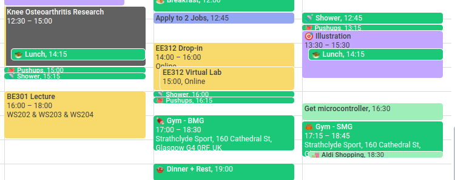

Feeling constantly busy? 3 ways to fix that
Jun 29 '21 • Written by Yassen Shopov
📖 7 minute read
busy [ˈbɪzi] - adjective, having a great deal to do.
Or as I like to rephrase it, busy = almost every single person I know at all times.
It’s a relatively new thing in our culture, and not only among hustlers and adults. Maybe it’s a consequence of the ever-increasing schoolwork we need to get done, which serves to prepare you for the ever-increasing (in price) university degree, which then leaves you semi-qualified for a job you may not like that much.
The answer to the question “What’s up?” is usually one of the two: “Nothing.” or “Oh, been busy.”.
Even if you aren’t feeling busy in particular, it feels logical that we prefer to exaggerate how busy our day is than admit to not doing much. After all, our societal perspective of the word “busy” carries a much more positive vibe.
However, this constant feeling of being behind doesn’t get us too far. Always being torn between different deadlines and projects to maintain, while you still have to take care of your own health, mind, social life - now that’s a surefire way to end up as a stressed-out burnout victim. Thankfully, there are ways to counteract this modern disease.
Spoiler alert for those who are too busy to read ahead:
Make clear objectives
Add buffer to your time blocks
Reflect frequently
Now, on to the nitty-gritty:
1. Make clear objectives
It’s absurd how often we fall into the trap of abstract goals. I don’t know a guy who hasn’t had (that was a mouthful) “Get 6-pack abs” in his New Year Resolutions at one point. Or multiple points. It’s become a meme beyond repair and abs have become a symbol of unachievable feats.
The reason most people fail is the inability to visualise the end goal and the steps leading to it. People can get abs both through rigorous training and a healthy diet, most often a combination of the two. But how much exactly? In what ratio?
These are the places in your journey that cause you to lose focus and veer away from your goal. It’s also the reason why most successful courses have a built-in-stone programme, and make you stick to it. It’s easier to get work done when you know exactly what needs to be done.
Actionable tip:
Next time you feel like you won’t be able to do a task, or you’re simply procrastinating it, try asking yourself the following questions:
What exactly is making this task unenjoyable?
Do I know how to do each step of the task?
If I don’t know, how can I clarify it further? (Google, ask for help, delegate)
How can I make it more enjoyable?
2. Add buffer to your time blocks
If you’re unfamiliar with the concept of time blocking, that’s something to delve into, because it is a proven way to get your schedule under control. Batching similar tasks together and doing them in one go (such as digital maintenance, emails, cleaning your computer) can help you accelerate your productivity.
This happens because you reduce the energy needed to switch between tasks if they fall in the same category. I find it harder to work out after I was just drawing than I do if I was already outside and doing some sort of physical activity. As Newton’s 1st Law states:
If a body is at rest or moving at a constant speed, it will remain at rest or keep moving in a straight line at constant speed unless it is acted upon by a force.
So if you put things of a similar category together, your brain has an easier time moving in a “straight line” than if you spent the whole day task-switching.
Sometimes, however, life gets in the way, or we get distracted and we don’t get stuff done in time. This is where buffer comes to the rescue.
Buffer, by my definition, is bonus time you put for each task you do, that allows for some wiggle room. I usually take 80 minutes to get a single-character illustration done if I’m focused, but that’s not always the case. This is why I sometimes make my ‘illustration’ block 90 minutes, or 120 minutes, if time allows. If I happen to get it done in 80 minutes or less, that’s great! If I don’t, at least it doesn’t get in the way of my other tasks.
3. Reflect frequently
Many people frequently recommended journqling to me, and it’s another one of those weird zen practices that only begin to make sense if you practice for a prolonged period of time. Yet, with journaling, I think very few people actually journal in the classic way.
Many people, me included, have modified this info a tad different habit. I do weekly, monthly, and annual reviews, where I reflect on what went right and wrong. It boils down to answering a list of questions and performing self-observation. And, if you’re a data nerd like myself, you can go over your “stats" from the past period (like sleep data, weight, progress on projects).
If you’re feeling constantly overwhelmed, there can be one or many reasons behind this. We often ignore that until the point of burn out, when it’s often too late.
This is where reflection or any other form of journaling can be helpful, as it will allow you to see patterns in your life. Look for connections, such as the days when you have bad sleep, or the weeks when you didn’t plan ahead on time.
Once you notice a pattern, it’ll be easier to solve your stress problems at the root, instead of just cutting the branches of burnout.
[7:30]
by Better Ideas